OREO Порошок и OREO Крошка передают насыщенный какао-вкус печенья OREO, так полюбившийся вам. Они украсят любой десерт, который вы собираетесь приготовить: когда вы демонстрируете свои кулинарные навыки или завоевываете чье-то сердце, когда к вам вдруг приходят гости, хочется чего-то простого и вкусного, или когда хотите закончить свой день чем-то сладким…
OREO в новом формате сделает приготовление быстрее, легче и веселее, а десерт — вкуснее. Наслаждайтесь десертами с OREO!
-
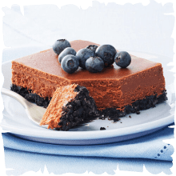OREO чизкейк «Двойной
шоколад»Рецепт OREO чизкейка «Двойной шоколад»Время приготовления: 1 ч 30 минутИнгредиенты:150 г печенья OREO
0,25 стакана сливочного масла, растопленного
900 г творожного сыра
1 стакан сахара
2 ст. л. муки
1 ст. л. ванили
125 г темного шоколада, растопленного
4 яйцаСпособ приготовления:Разогрейте духовку до 160°С, приготовьте форму для выпекания.
Измельчите печенье OREO в мелкую крошку с помощью блендера или ножа, смешайте с маслом. Полученную смесь распределите на дно формы и выпекайте 10 минут.
Сливочный сыр, сахар, муку и ваниль смешайте до однородной консистенции.
Добавьте к смеси растопленный шоколад и еще раз хорошо перемешайте.
В полученную смесь добавляйте по одному яйцу и перемешивайте на низкой скорости.
Перелейте полученную смесь в форму для выпекания.
Выпекайте 45 минут или пока центр не затвердеет.
Полностью охладите полученный OREO чизкейк «Двойной шоколад» в холодильнике.
-
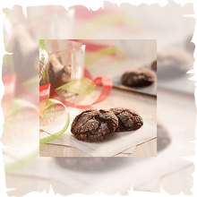Печенье с OREOРецепт печенья с OREOВремя приготовления: 2 часаИнгредиенты:150 г печенья OREO
1 стакан муки
1/2 стакана какао-порошка
2 ч. л. разрыхлителя
1/2 стакана сливочного масла, размягченного
1 стакана сахара
4 яйца
1 ч. л. ванили
0,25 стакана сахарной пудрыСпособ приготовления:Измельчите 150г печенья OREO в мелкую крошку с помощью блендера или ножа. Отделите 50г от получившегося объема.
Оставшуюся крошку из OREO смешайте с мукой, какао-порошком и разрыхлителем, хорошо перемешайте. Взбейте сливочное масло с сахаром до воздушного состояния.
Добавляйте по одному яйцу к смеси и хорошо перемешивайте на низкой скорости.
Смешайте полученную смесь с сухими ингредиентами, добавьте ваниль, еще раз перемешайте.
Отправьте полученную смесь в холодильник на 1 час.
Смешайте оставшуюся крошку из OREO с сахарной пудрой.
Раскатайте тесто и сформируйте из него шарики, размером около 3 см. каждый. Обваляйте шарики в смеси крошки из OREO и сахарной пудры.
Разместите шарики на противне и немного их придавите, придав им форму печенья
Выпекайте 10 минут или пока верхушка печенья не разломится
-
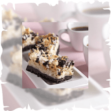Пирожное с OREOРецепт пирожных с OREOВремя приготовления: 1 часИнгредиенты:300 г печенья OREO
50-60 г сливочного масла, растопленного
2 стакана кокосовой стружки
1,5 стакана белого шоколада
0,75 стакана нарезанных грецких орехов
1,5 банки сгущенного молокаСпособ приготовления:Разогрейте духовку до 175°С.
Измельчите 250г печенья OREO в мелкую крошку с помощью блендера или ножа. Отделите 50г от получившегося объема.
Смешайте оставшуюся крошку из OREO и сливочное масло.
Полученную смесь распределите на дно квадратной формы для выпекания.
Смешайте орехи, кокосовую стружку, белый шоколад и сгущенное молоко вместе.
Распределите полученную смесь по форме.
Выпекайте в духовке 25-30 минут или до образования на поверхности золотистого цвета.
Посыпьте оставшейся крошкой из OREO сверху.
-
Пирог OREO с бананомРецепт пирога OREO с бананомВремя приготовления: 30 минут, всего 4 часа 30 минутИнгредиенты:350 г печенья OREO
1/4 стакана растопленного сливочного масла
1 1/2 стакана молока
1 1/2 стакана кулинарных сливок
2 яичных желтка
1/2 стакана сахара
1/3 стакана загустителя
1 чайная ложка ванильного экстракта
30 г сливочного масла, измельченного на кубики
3 спелых банана
1 чашка взбитых сливок
Способ приготовления:Измельчите 350г печенья OREO блендером или ножом. Отделите 50г для посыпки, оставшуюся крошку из OREO смешайте с маслом и выложите, прессуя, в форму диаметром 23 см.
Смешайте молоко, кулинарные сливки, яичные желтки, сахар и загуститель в кастрюле среднего размера и до однородной массы, и пока загуститель полностью не растворится. Затем включите плиту на сильном огне и перемешайте в кастрюле смесь, доведите до кипения, не забывайте постоянно помешивать. Примерно через 15 минут, когда смесь загустеет, как пудинг, снимите с огня и добавьте ванильный экстракт и кубики сливочного масла.
Нарежьте бананы кольцами и выложите половину на корж в форму. Покройте половиной крема, который вы предварительно приготовили, а затем повторите процесс в другом слое.
Уберите в холодильник на 4 часа или до тех пор, пока пирог не затвердеет. Перед подачей украсьте взбитыми сливками и посыпьте оставшимися 50г крошки из OREO.
-
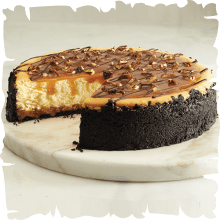Карамельный чизкейк OREOРецепт карамельного чизкейка OREOВремя приготовления: 1 час, всего 6 часов 10 минутИнгредиенты:300г печенья OREO
50-60 г растопленного сливочного масла
400 г карамели
1/2 стакана молока
1 чашка измельченных грецких орехов
675 г размягченного сливочного сыра
3/4 стакана сахара
1 чайная ложка ванильного экстракта
3 яйца
50-60 г темного шоколадаСпособ приготовления:Разогрейте духовку до 170°C.
Измельчите печенье OREO в мелкую крошку с помощью блендера или ножа. Смешайте с маслом и выложите, прессуя, в форму диаметром 23 см.
В микроволновой печи разогрейте карамель и молоко на высокой мощности в течение 3 минут (по 1 минуте, проверяя смесь) или до тех пор, пока карамельки полностью не расплавятся, периодически перемешивая. Когда смесь расплавится, вмешайте орехи. Половину смеси вылейте в форму с основой для чизкейка поставьте в холодильник на 10 минут, чтобы все затвердело. Сохраните оставшуюся карамель с грецкими орехами до следующего этапа.
Миксером взбейте сливочный сыр, сахар и ванильный экстракт до получения однородной массы. Постепенно добавьте по одному яйцу, осторожно помешивая на низкой скорости. Выложите в форму. Поверх крема вылейте оставшуюся карамельную смесь.
Выпекайте в течение 65-70 минут или пока не увидите, что чизкейк застыл. Используйте нож, чтобы отделить его от формы. Дайте полностью остыть, прежде чем вынуть из формы. Уберите в холодильник на 4 часа.
В микроволновой печи нагрейте оставшуюся карамель с грецкими орехами в течение примерно 60 секунд. Размешайте, затем налейте на готовый чизкейк. Расплавьте шоколад на водяной бане, а затем распределите его по чизкейку. Подавать сразу или после дополнительного охлаждения
-
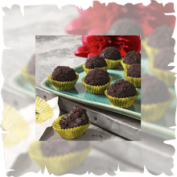Шоколадные шарики OREOРецепт шоколадных шариков OREOВремя приготовления: 1 ч 20 минутИнгредиенты:300 г печенья OREO
120 г темного шоколада, растопленного
0,5 стакана сливок
2 ч. л. перца чилиСпособ приготовления:Измельчите печенье OREO в мелкую крошку с помощью блендера или ножа. Отложите 6 столовых ложек в сторону.
Смешайте растопленный на водяной бане шоколад, сливки и перец до получения однородной массы.
Добавьте в полученную смесь крошку из OREO и хорошо перемешайте.
Из полученной смеси сформируйте шарики, обваляйте их в оставшейся крошке.
Отправляйте полученные шарики в холодильник на 1 час или до затвердевания формы.
-
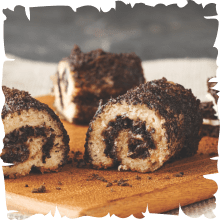Сладкие роллы OREOРецепт сладких роллов OREOВремя приготовления: 30-45 минутИнгредиенты:150 г печенья OREO
220 г сливочного сыра
50 г сахара
1 яичный желток
12 кусочков белого хлеба для тостов (корочки предварительно снять)
3 ложки растопленного сливочного маслаСпособ приготовления:Разогрейте духовку до 180°C.
Измельчите печенье OREO в мелкую крошку с помощью блендера или ножа.
В миске среднего размера смешайте сливочный сыр, сахар и яичный желток до однородной массы. Медленно добавляйте крошку из OREO.
Раскатайте и сплющьте скалкой кусочки хлеба, а затем на каждый кусочек положите по ложке смеси, которую сделали ранее. Начиная с более короткой стороны, каждый кусочек крепко скрутите. На каждый рулет нанесите растопленное сливочное масло со всех сторон, а затем обваляйте в крошке из OREO.
Рулеты разрежьте и положите на дно формы, покрытой бумагой для выпечки.
Выпекайте около 12 минут в разогретой духовке или пока не увидите, как рулеты слегка запекутся.
-
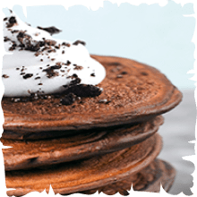Блинчики OREOРецепт блинчиков OREOВремя приготовления: 10 минутИнгредиенты:100 г печенья OREO
Блинное тесто на 20 блинчиков (домашнее или приобретенное в магазине)Способ приготовления:Подготовьте тесто для американских блинчиков по своему усмотрению, если вы делаете его самостоятельно. Если вы приобретаете готовую смесь, следуйте инструкциям на упаковке.
Измельчите печенье OREO в мелкую крошку с помощью блендера или ножа. Замешайте в тесто.
Нагрейте большую сковороду до умеренно высокой температуры, слегка смажьте её растительным маслом.
Блинчики можно украсить мороженым или взбитыми сливками с оставшейся крошкой из OREO.
-
Чизкейк OREO c белым
шоколадом и малинойРецепт чизкейка OREO с белым шоколадом и малинойВремя приготовления: 30 минут, всего до 5 часовИнгредиенты:150 г печенья OREO
60 г растопленного сливочного масла
200 г белого шоколада
400 г мягкого сливочного сыра
100 г сахара
1 ч. л. ванильного экстракта
2 яйца
100 г малинового джемаСпособ приготовления:Разогрейте духовой шкаф до 180 градусов.
Измельчите печенье OREO в мелкую крошку с помощью блендера или ножа. Смешайте со сливочным маслом, распределите смесь по дну квадратной формы 23 см.
Растопите 150 г шоколада на водяной бане. Тщательно взбейте миксером сливочный сыр, сахар и ванильный экстракт в большой миске до получения однородной смеси. Добавьте растопленный шоколад, хорошо перемешайте.
Добавляйте яйца по одному, медленно перемешивая до получения однородной смеси. Залейте смесь на основу чизкейка.
Выпекайте в течение 25 -28 минут или до почти полной готовности центральной части.
Дайте остыть в течение 5 минут, намажьте джемом.
Растопите оставшийся шоколад (50 г), украсьте им чизкейк. Дайте чизкейку полностью остыть.
Подавайте холодным.
-
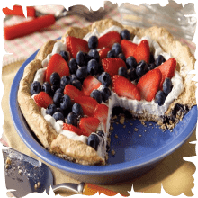Ангельский пирог OREOРецепт «Ангельский пирог OREO»Время приготовления: 15 минут, всего 40 минутИнгредиенты:150 г печенья OREO
3 яичных белка
150 г сахара
1 ч. л. разрыхлителя
200 мл взбитых сливок
150 г нарезанной клубники
150 г черникиСпособ приготовления:Измельчите печенье OREO в мелкую крошку с помощью блендера или ножа.
Взбейте яичные белки электрическим миксером на высокой скорости.
Смешайте сахар и разрыхлитель, медленно пересыпьте в яичные белки, взбивая до образования плотной и блестящей массы.
Аккуратно замешайте в смесь OREO Порошок.
Распределите получившуюся смесь по слегка смазанной сливочным маслом 22-сантиметровой форме для пирога.
Выпекайте при температуре 180°C в течение 25-30 минут или до появления румяного цвета.
Дайте пирогу полностью остыть. Намажьте топпинг из взбитых сливок и ягод на основу.
Подавайте сразу по готовности.
-
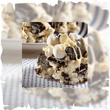Десерт OREO с попкорномРецепт десерта OREO с попкорномВремя приготовления: 30 минутИнгредиенты:150 г печенья OREO
1 уп. маршмеллоу
1 плитка белого шоколада
2 ст. л. сливочного масла
1 уп. готового попкорнаСпособ приготовления:Половину плитки белого шоколада растопить вместе со сливочным маслом в микроволновке. Добавить половину упаковки маршмелоу и еще раз поставить в микроволновку на 30-60 секунд до получения однородной массы. В полученную массу добавляем готовый попкорн. На дно приготовленной посуды выкладываем оставшийся маршмелоу, поверх кладем нашу приготовленную смесь, затем добавляем оставшийся растопленный белый шоколад с измельченным печеньем ОREO. Даем остыть.
-
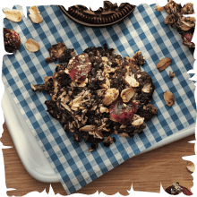«Гранола с OREO» без выпечкиРецепт «Гранола с OREO» без выпечкиВремя приготовления: 20 минут + 2 часа для охлажденияИнгредиенты:300 г измельченного печенья OREO
5 стаканов овсяных хлопьев
1 стакан сушеной вишни
0,5 стакана растопленного кокосового масла
5 ст. л. меда
2,5 ст. л. семян подсолнечникаСпособ приготовления:Измельчите в блендере овсяные хлопья до состояния мелкого помола.
Добавьте в хлопья все остальные ингредиенты и перемешайте их.
Подогрейте полученную смесь в микроволновке в течение 1-2 минут.
Из полученной смеси сформируйте порционное печенье, выложите его на противень.
Охладите полученные печенья в холодильнике в течение 2 часов или до затвердения.
-
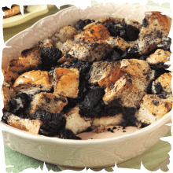Пудинг OREOРецепт пудинга OREOВремя приготовления: 1-1,5 часаИнгредиенты:300 г печенья OREO
1000 г старого белого хлеба, порезанного на кубики
4 яйца
800 мл молока
120 г сахара
120 г растопленного сливочного масла
2 ч. л. ванильного сахара/ванилинаСпособ приготовления:Разогрейте духовку до 180°C.
В отдельной миске взбейте яйца, молоко, сахар, растопленное сливочное масло и ваниль до однородной массы. Добавьте в эту смесь кубики хлеба и измельченное печенье OREO, хорошо перемешайте.
Положите смесь в форму для запекания, предварительно смазанную маслом.
Выпекайте в течение 45 минут или до тех пор, пока не увидите, что пудинг полностью загустеет.
Подавайте теплым или слегка прохладным.
-
Кекс в кружке с OREOРецепт кекса в кружке с OREOВремя приготовления: 15 минутИнгредиенты:50 г печенья OREO
1 яйцо
2 ст. л растопленного сливочного масла
1/4 ст. л. ванильного экстракта
50 г пшеничной муки
50 г сахара
5 кусочков шоколадаСпособ приготовления:Слегка смажьте маслом 2 кружки, пригодные для использования в микроволновой печи.
Тщательно взбейте 1 яйцо, 2 столовые ложки растопленого сливочного масла и 1/4 ст. ложки ванильного экстракта в миске среднего размера. Добавьте муку и сахар. Хорошо перемешайте.
Отложите 1 ст. ложку OREO Крошки для последующего использования. Замешайте оставшиеся крошки печенья в тесто для кекса.
Разломите 1 кусочек шоколада пополам по диагонали, отложите для дальнейшего использования. Слегка измельчите оставшиеся шоколадные квадратики, замешайте в тесто. С помощью ложки переложите смесь в подготовленные кружки.
Подержите в микроволновой печи на максимальной температуре 1 минуту 15 секунд.
Вытащите кружку из микроволновой печи. Оставьте на 1 минуту.
-
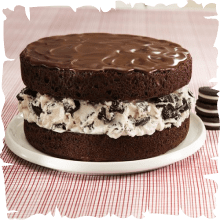Торт с OREO крошкой
в шоколадной глазуриРецепт торта с OREO крошкой в шоколадной глазуриВремя приготовления: 30 минут, всего 1 час 20 минутИнгредиенты:150 г печенья OREO
1 упаковка смеси для шоколадных коржей (или уже готовые коржи)
120 г горького шоколада
50 г сливочного масла
230 г мягкого сливочного сыра
100 г сахара
400 мл. взбитых сливокСпособ приготовления:Приготовьте тесто для торта и выпекайте в 2 круглых формах (22 см), как указано на упаковке.
Дайте остыть коржам в формах в течение 10 минут, переверните формы на решетки и аккуратно снимите формы. Дайте коржам остыть полностью.
Разогрейте в микроволновой печи шоколад и масло в средней по размеру миске при высокой температуре в течение 45 секунд – 1 минуты или до момента, когда растопится масло.
Помешивайте, пока шоколад не растает полностью.
Оставьте остыть на 5 минут. В это время тщательно перемешайте сливочный сыр и сахар в большой миске с помощью миксера.
Аккуратно замешайте смесь в заранее приготовленные взбитые сливки и измельченное печенье OREO.
Положите 1 корж на тарелку, покройте его смесью из сливочного сыра. Поместите сверху другой корж. Полейте шоколадной глазурью, оставьте на 10 минут или до затвердения.
-
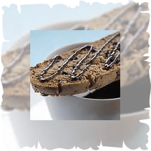Печенье «OREO Бискотти»Рецепт печенья «OREO Бискотти»Время приготовления: 1 ч 30 минутИнгредиенты:150 г печенья OREO
1,5 стакана сахара
1/2 стакана растопленного сливочного масла
4 яйца
2,5 ч. л. ванили
4 стакана муки
1 -2 ч. л. разрыхлителя
0,2 ч. л. солиСпособ приготовления:Разогрейте духовку до 175°С.
Измельчите печенье OREO с помощью блендера, ножа или в ступке.
Смешайте в миске сахар, масло, яйца и ваниль до однородного состояния.
Добавьте в полученную смесь муку, разрыхлитель и соль, хорошо перемешайте. Добавьте измельченное печенье OREO.
Разделите полученное тесто на 5 частей, сформируйте из них буханки размером примерно 20х7 см. Переложите полученные буханки на противень, заранее застеленный бумагой для выпечки.
Выпекайте изделие в духовке 25-30 минут или пока зубочистка, вставленная в центр, не будет оставаться сухой.
Достаньте готовые буханки и дайте им остыть 10 минут, после — нарежьте их на кусочки толщиной в 1 см.
Положите их на противень и отправьте в духовку. Выпекайте по 10-12 минут с каждой стороны или до образования легкой корочки. После выпекания дайте им полностью остыть.